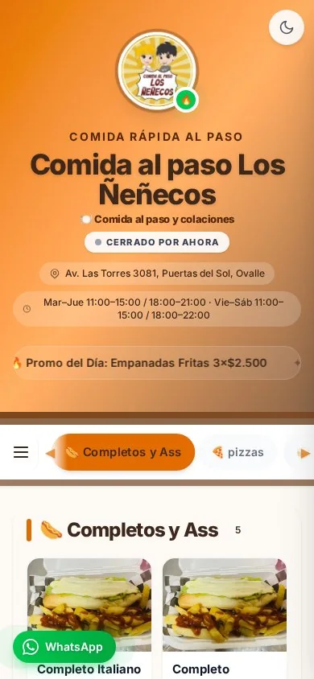

01
Decide tu carrera
Plataforma de orientación vocacional: test, cálculo de puntajes y comparación de carreras. En producción y usada en colegios de la región.
decidetucarrera.web.app →
Construyo aplicaciones web, móviles y juegos que hoy usan personas reales: una plataforma de orientación vocacional en colegios, un catálogo con pedidos, una app de bodega y un juego en Godot.
Plataforma de orientación vocacional: test, cálculo de puntajes y comparación de carreras. En producción y usada en colegios de la región.
decidetucarrera.web.app →Plataforma de talleres culinarios con tres roles: docentes que publican recetas y material, administración que revisa, y público que consulta sin cuenta.

Menú digital con carrito y pedidos por WhatsApp para un local de comida al paso en Ovalle. Cliente real, uso diario.
nenekos-c1e77.web.app →
App Android nativa para inventario y movimientos de stock, con base local y operación sin conexión. Pantallas de escritorio y móvil, sin captura pública todavía.
Juego 3D en Godot: oleadas enemigas, armas y feedback de impacto. En desarrollo, con mira puesta en itch.io y Steam.

Todos estos productos los construí trabajando con agentes de IA: les doy el problema, el criterio de calidad y la verificación, y ellos ejecutan. Lo que entrego es el resultado medido, no el proceso.
Disponible para trabajo remoto, prácticas y proyectos freelance. Escríbeme con el problema y te respondo con un plan concreto.